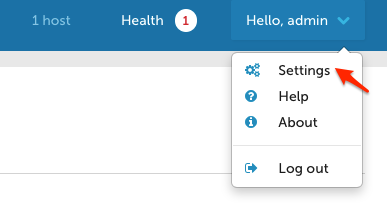
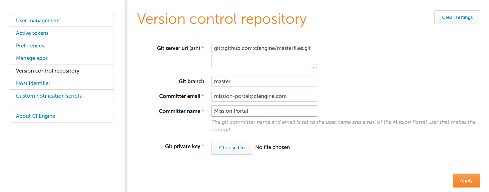

Best Practices
Version Control and Configuration Policy
CFEngine users version their policies. It's a reasonable, easy thing
to do: you just put /var/cfengine/masterfiles under version control
and... you're done?
What do you think? How do you version your own infrastructure?
Problem statement
It turns out everyone likes convenience and writing the versioning machinery is hard. So for CFEngine Enterprise 3.6 we set out to provide version control integration with Git out of the box, disabled by default. This allows users to use branches for separate hubs (which enables a policy release pipeline).
Release pipeline
A build and release pipeline is how software is typically delivered to production through testing stages. In the case of CFEngine, policies are the software. Users have at least two stages, development and production, but typically the sequence has more stages including various forms of testing/QA and pre-production.
How to enable it
To enable masterfiles versioning, you have to plan a little bit. These are the steps:
Configure your repository
Use a remote Git repository accessible via the git or https protocol
populated with the contents of masterfiles.
Using a remote repository
To use a remote repository, you must enter its address, login credentials and the branch you want to use in the Mission Portal VCS integration panel. To access it, click on "Settings" in the top-left menu of the Mission Portal screen, and then select "Version control repository". This screen by default contains the settings for using the built-in local repository.


Make sure your current masterfiles are in the chosen repository
This is critical. When you start auto-deploying policy, you will
overwrite your current /var/cfengine/masterfiles. So take the
current contents thereof and make sure they are in the Git repository
you chose in the previous step.
For example, if you create a new repository in GitHub by following the
instructions from https://help.github.com/articles/create-a-repo, you
can add the contents of masterfiles to it with the following
commands (assuming you are already in your local repository checkout):
cp -r /var/cfengine/masterfiles/* .
git add *
git commit -m 'Initial masterfiles check in'
git push origin master
Enable VCS deployments in the versioned update.cf
In the file update_def.cf under a version-specific subdirectory of
controls/ in your version-controlled masterfiles, change
#"cfengine_internal_masterfiles_update" expression => "enterprise.!(cfengine_3_4|cfengine_3_5)";
"cfengine_internal_masterfiles_update" expression => "!any";
to
"cfengine_internal_masterfiles_update" expression => "enterprise.!(cfengine_3_4|cfengine_3_5)";
#"cfengine_internal_masterfiles_update" expression => "!any";
This is simply commenting out one line and uncommenting another.
Remember that you need to commit and push these changes to the
repository you chose in the previous step, so that they are picked up
when you deploy from the git repository. In your checked out
masterfiles git repository, these commands should normally do the
trick:
git add update.cf
git commit -m 'Enabled auto-policy updates'
git push origin master
Now you need to do the first-time deployment, whereupon this new
update.cf and the rest of your versioned masterfiles will overwrite
/var/cfengine/masterfiles. We made that easy too, using standard
CFEngine tools. Exit the cfapache account and run the following
command as root on your hub:
cf-agent -Dcfengine_internal_masterfiles_update -f update.cf
Easy, right? You're done, from now on every time update.cf is run
(by default, every 5 minutes) it will check out the repository and
branch you configured in the Mission Portal VCS integration panel.
Please note all the work is done as user cfapache except the very
last step of writing into /var/cfengine/masterfiles.
How it works
The code is fairly simple and can even be modified if you have special
requirements (e.g. Subversion integration). But out of the box there
are three important components. All the scripts below are stored under
/var/cfengine/httpd/htdocs/api/dc-scripts/ in your CFEngine
Enterprise hub.
common.sh
The script common.sh is loaded by the deployment script and does two
things. First, it redirects all output to
/var/cfengine/outputs/dc-scripts.log. So if you have problems,
check there first.
Second, the script sources /opt/cfengine/dc-scripts/params.sh where
the essential parameters like repository address and branch live.
That file is written out by the Mission Portal VCS integration panel,
so it's the connection between the Mission Portal GUI and the
underlying scripts.
masterfiles-stage.sh
This script is called to deploy the masterfiles from VCS to
/var/cfengine/masterfiles. It's fairly complicated and does not
depend on CFEngine itself by design; for instance it uses rsync to
deploy the policies. You may want to review and even modify it, for
example choosing to reject deployments that are too different from the
current version (which could indicate a catastrophic failure or
misconfiguration).
This script also validates the policies using cf-promises -T. That
command looks in a directory and ensures that promises.cf in the
directory is valid. If it's not, an error will go in the log file and
the script exits.
NOTE this means that clients will never get invalid policies according to the hub.
Policy changes
If you want to make manual changes to your policies, simply make those
changes in a checkout of your masterfiles repository, commit and push
the changes. The next time update.cf runs, your changes will be
checked out and in minutes distributed through your entire
infrastructure.
Benefits
To conclude, let's summmarize the benefits of versioning your masterfiles using the built-in facilities in CFEngine Enterprise.
- easy to use compared to home-grown VCS integration
- supports Git out of the box and, with some work, can support others like Subversion, Mercurial, and CVS.
- tested, reliable, and built-in
- supports any repository and branch per hub
- your policies are validated before deployment
- integration happens through shell scripts and
update.cf, not C code or special policies
Scalability
When running CFEngine Enterprise in a large-scale IT environment with many thousands of hosts, certain issues arise that require different approaches compared with smaller installations.
With CFEngine 3.6, significant testing was performed to identify the issues surrounding scalability and to determine best practices in large-scale installations of CFEngine.
Moving PostgreSQL to Separate Hard Drive
Moving the PostgreSQL database to another physical hard drive from the other CFEngine components can improve the stability of large-scale installations, particularly when using a solid-state drive (SSD) for hosting the PostgreSQL database.
The data access involves a huge number of random IO operations, with small chunks of data. SSD may give the best performance because it is designed for these types of scenarios.
Important: The PostgreSQL data files are in /var/cfengine/state/pg/ by default. Before moving the mount point, please make sure that all CFEngine processes (including PostgreSQL) are stopped and the existing data files are copied to the new location.
Setting the splaytime
The splaytime tells CFEngine hosts the base interval over which they will communicate with the policy server, which they then use to "splay" or hash their own runtimes.
Thus when splaytime is set to 4, 1000 hosts will hash their run attempts evenly over 4 minutes, and each minute will see about 250 hosts make a run attempt. In effect, the hosts will attempt to communicate with the policy server and run their own policies in predictable "waves." This limits the number of concurrent connections and overall system load at any given moment.